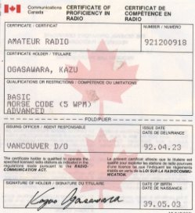
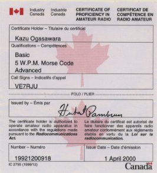

カナダ(Vancouver・BC)からの運用

Canadaで運用するVE7RJUのQSL
|
【 Canadaのアマチュア無線の免許 】
カナダに滞在している時にはこのVE7RJUコールサインで運用しています。
【 Canadaの資格 】
  カナダの旧アマチュア無線従事者免許証。この他に1年更新の局の免許状が必要だった (右)終身免許となった現在の免許証(携帯用)。A4サイズの壁掛用の免許状も発給される。 |
|
The Radio Amateurs of Canada Six-Metre Band Plan Send comments to VHF/UHF Spectrum Management Committee, Dana Shtun VE3DSS (This plan was approved October 1997) BAND: 50 - 54 MHz STATUS: Amateur Exclusive FREQUENCY (MHz) UTILIZATION 50.0 - 50.6.....NARROW BAND MODES (SSB, AM ) 50.0 - 50.050...CW / BEACONS / MOONBOUNCE 50.050 - 50.1...CW / BEACONS 50.1 - .........CW CALLING FREQUENCY 50.1-50.6 - ....SSB and AM MODES (BANDWIDTH less than or= 2.3 kHz) 50.105 - 50.115..DX WINDOW (LISTEN FOR DX HERE)(4) 50.110...........DX WINDOW CALLING FREQUENCY (4) 50.125...........NATIONAL SSB CALLING FREQUENCY 50.4.............AM CALLING FREQUENCY 50.6 - 51.0......EXPERIMENTAL MODES (1) 50.7 ..........RTTY,AMTOR CALLING FREQUENCY 50.8 - 50.98...RADIO CONTROL OF MODELS, TEN CHANNELS ON A 20 kHz RASTER 51 - 51.1......PACIFIC (ZL) DX WINDOW (SSB/CW ONLY) (3) 51.1 - 52......FM VOICE SIMPLEX, AND PACKET (1) 51.7 ..........ATIONAL SIMPLEX PACKET CALLING FREQ 52 - 52.05 ....ACIFIC (VK) DX WINDOW (SSB/CW ONLY) (3) 52.525 ........NATIONAL FM CALLING FREQUENCY 52 - 53 .......FM VOICE REPEATER INPUTS (2) 53 - 54 .......FM VOICE REPEATER OUTPUTS Footnotes: 1) In North America the following frequencies are suggested for Packet digipeater and packet scatter operation: 50.62/51.62 50.68/51.68 50.76/51.76 50.64/51.64 50.72/51.72 50.78/51.78 50.66/51.66 50.74/51.74 For co-located voice and packet repeaters, use high (input) and low (output) to provide maximum mutual frequency isolation. 2) SEE TABLE OF REPEATER PAIRS 3) AMATEURS ARE REQUESTED TO AVOID USING FM OR OTHER WIDE BAND MODES ON THESE FREQUENCIES TO MINIMIZE INTERFERENCE TO AUSTRALIAN AND NEW ZEALAND AMATEURS WORKING INTO REGION 2 ON SSB/CW. 4) NORTH AMERICAN AMATEURS ARE REQUESTED TO AVOID CALLING "CQ DX" ON 50.110 MHz. |